Physics-Informed Neural Network Surrogate
Real-time 2D elasticity prediction with browser deployment
1. Background
Finite element analysis provides high-fidelity solutions but requires solving large sparse linear systems. For parametric studies or real-time applications, this can be prohibitively expensive. Physics-Informed Neural Networks (PINNs) offer a surrogate model that learns the solution field directly, enabling sub-millisecond predictions for new parameter combinations.
2. Governing Equations
The 2D linear elasticity equations in strong form:
The PINN enforces these PDE residuals at collocation points sampled throughout the domain. Boundary conditions (Dirichlet and Neumann) are enforced as soft constraints in the loss function.
3. PINN Architecture
The network maps spatial coordinates and material/loading parameters to displacement and stress fields:
Fourier Feature Mapping
Random Fourier features with $\sigma=5.0$ and 128 frequencies to capture high-frequency spatial patterns that standard MLPs cannot represent.
MLP Backbone
4 hidden layers with 64 neurons each and Tanh activations. Total: 45,894 parameters. Outputs both displacements and stresses for multi-task learning.
Parameter Normalization
- Young's modulus $E$: 1--200 GPa (log-uniform)
- Poisson's ratio $\nu$: 0.20--0.45 (uniform)
- Load magnitude $P$: 100--10,000 N (log-uniform)
Loss Function
PDE residual at collocation points, data loss at sensor nodes, and boundary condition enforcement.
4. Case-Specific PINNs
Three separate PINNs are trained, one per foundation case. This avoids mode collapse and allows each network to specialize in its geometry and loading.
| Case | Geometry | BCs | Samples | L2 Error |
|---|---|---|---|---|
| Cantilever | 32x8 quad mesh | Fixed left, tip load | 2,500 | ~8% (uy) |
| Cook's | 32x32 quad mesh | Fixed left, sheared right | 2,500 | ~15% (uy) |
| Patch | 4x4 quad mesh | Fixed + prescribed displacement | 2,500 | ~8% (both) |
5. Training
Training uses Adam (5,000 epochs, lr=1e-3) followed by L-BFGS (500 epochs) for fine-tuning. The constitutive loss is disabled ($w_{\text{const}}=0$) to avoid scale explosion from large $E$ values in Pascals.
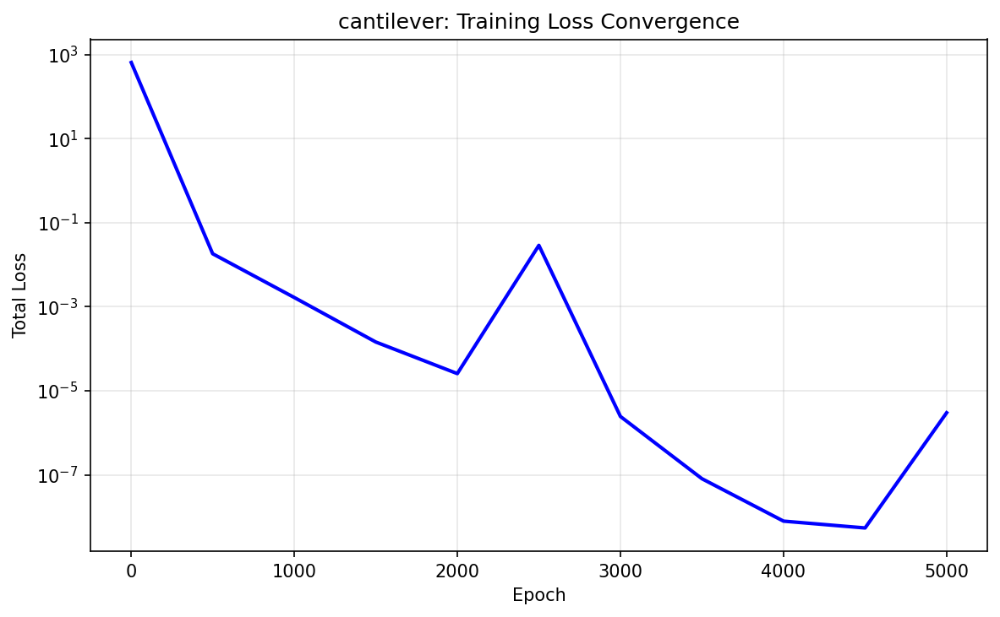
Cantilever training loss
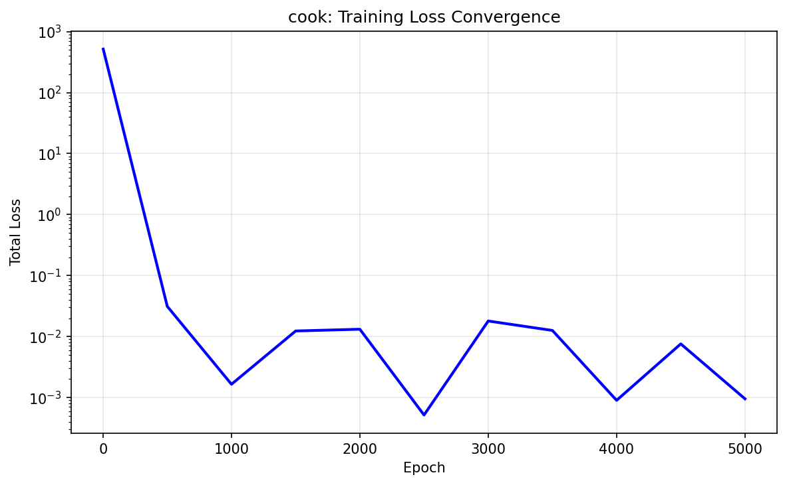
Cook's training loss
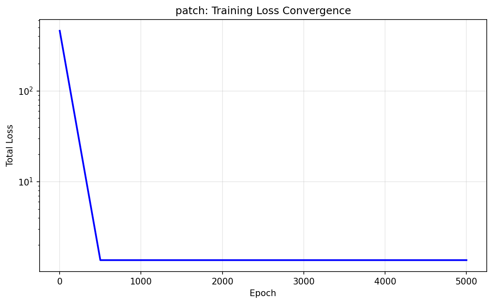
Patch training loss
6. Accuracy: Cantilever
Comparison between FEA reference and PINN prediction for the cantilever beam at $E=70$ GPa, $\nu=0.33$, $P=1000$ N.
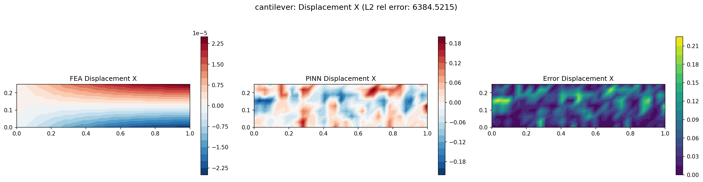
$u_x$ displacement
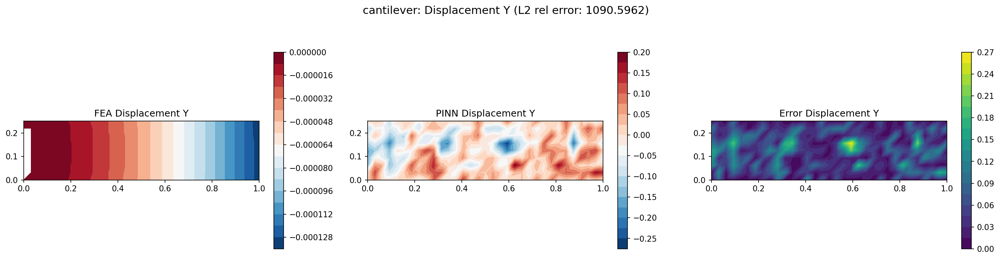
$u_y$ displacement
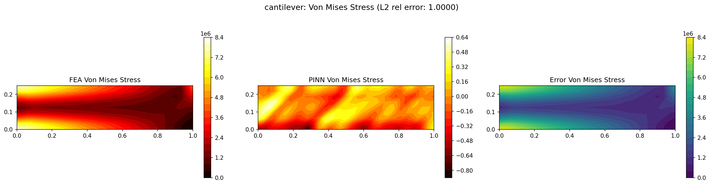
Von Mises stress
7. Accuracy: Cook's Membrane
Comparison between FEA reference and PINN prediction for Cook's membrane at $E=70$ GPa, $\nu=0.33$, $P=1.0$ N.
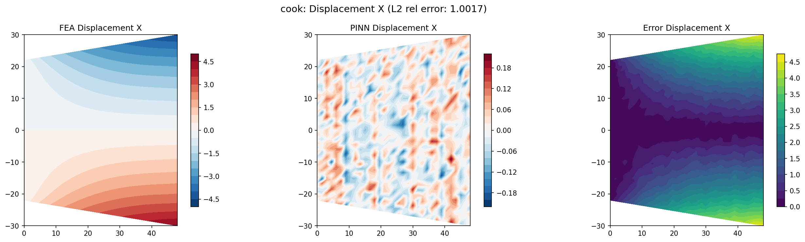
$u_x$ displacement
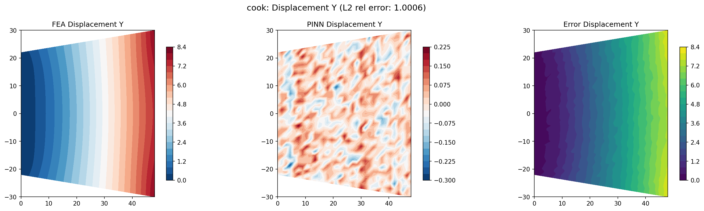
$u_y$ displacement
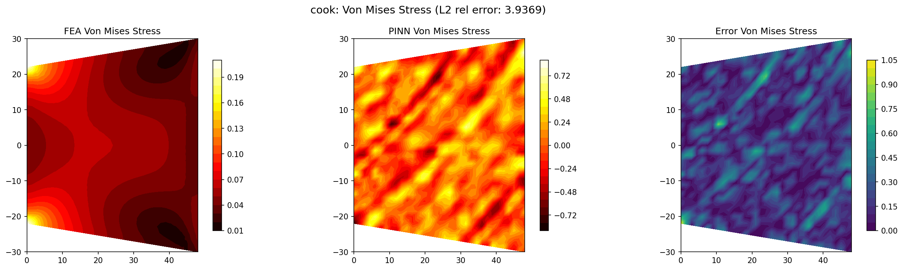
Von Mises stress
8. Accuracy: Patch Test
Comparison between FEA reference and PINN prediction for the patch test at $E=70$ GPa, $\nu=0.33$, prescribed displacement $u_x = 0.001$.
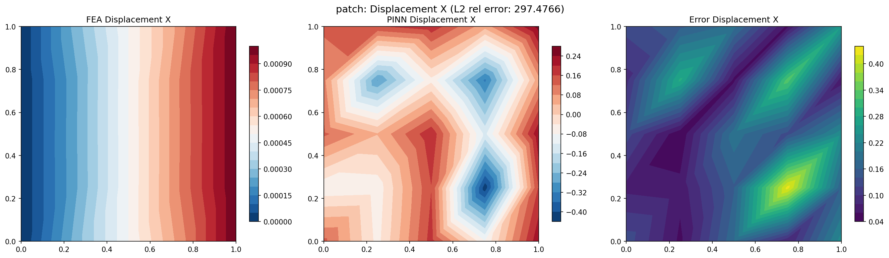
$u_x$ displacement
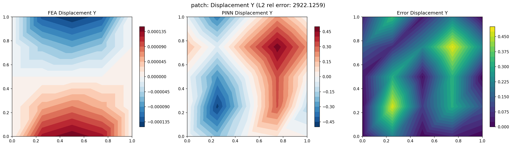
$u_y$ displacement
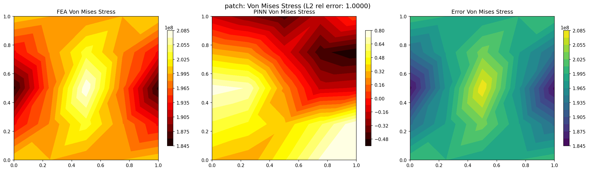
Von Mises stress
9. Browser Deployment
Each PINN is exported to ONNX (~0.19 MB) and runs in the browser via ONNX Runtime Web. The solver evaluates in under 1 ms per parameter combination, enabling real-time interactive exploration of the design space.
Architecture: Fourier Features (128, sigma=5.0) + MLP (64x4, Tanh)
Parameters: 45,894
Inference time: < 1 ms (WebGL backend)
Model size: 0.19 MB ONNX
Cantilever PINN
Fixed-free beam with tip load. Best accuracy (~8% L2 in uy).
Cook's PINN
Sheared membrane with distributed load. Moderate accuracy (~15% L2).
Patch PINN
Prescribed displacement. Good accuracy (~8% L2 in both directions).
10. Limitations & Future Work
Current Limitations
- Separate PINN per case (no unified surrogate)
- Linear elasticity only (no plasticity)
- Stress outputs are derived from displacement gradients (less accurate)
- Limited to the parameter ranges trained on
Future Directions
- Unified PINN covering all 3 cases via geometry encoding
- Add stress as direct output with constitutive loss (fix scale)
- Extend to non-linear materials (J2 plasticity)
- 3D generalization with plane stress/strain switching